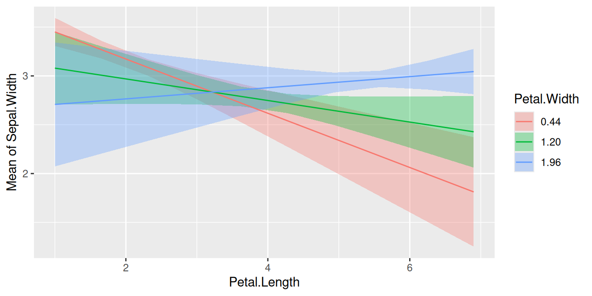
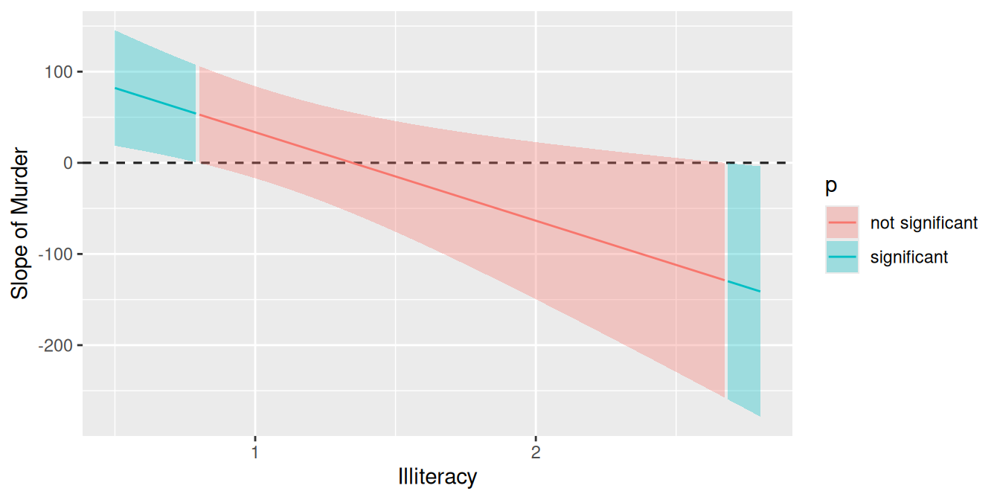

Slopes, floodlight and spotlight analysis (Johnson-Neyman intervals)
Source:vignettes/introduction_comparisons_2.Rmd
introduction_comparisons_2.RmdThis vignette is the second in a 4-part series:
Comparisons of Slopes, Floodlight and Spotlight Analysis (Johnson-Neyman Intervals)
Contrasts and comparisons for slopes of numeric predictors
For numeric focal terms, it is possible to calculate contrasts for slopes, or the linear trend of these focal terms. Let’s start with a simple example again.
library(modelbased)
library(parameters)
data(iris)
m <- lm(Sepal.Width ~ Sepal.Length + Species, data = iris)
model_parameters(m)
#> Parameter | Coefficient | SE | 95% CI | t(146) | p
#> ----------------------------------------------------------------------------
#> (Intercept) | 1.68 | 0.24 | [ 1.21, 2.14] | 7.12 | < .001
#> Sepal Length | 0.35 | 0.05 | [ 0.26, 0.44] | 7.56 | < .001
#> Species [versicolor] | -0.98 | 0.07 | [-1.13, -0.84] | -13.64 | < .001
#> Species [virginica] | -1.01 | 0.09 | [-1.19, -0.82] | -10.80 | < .001We can already see from the coefficient table that the slope for
Sepal.Length is 0.35. We will thus find the same increase
for the predicted values in our outcome when our focal variable,
Sepal.Length increases by one unit.
estimate_means(m, "Sepal.Length=c(4,5,6,7)")
#> Estimated Marginal Means
#>
#> Sepal.Length | Mean | SE | 95% CI | t(146)
#> --------------------------------------------------
#> 4 | 2.41 | 0.09 | [2.24, 2.59] | 27.24
#> 5 | 2.76 | 0.05 | [2.67, 2.85] | 60.55
#> 6 | 3.11 | 0.02 | [3.06, 3.16] | 126.07
#> 7 | 3.46 | 0.06 | [3.35, 3.58] | 59.16
#>
#> Variable predicted: Sepal.Width
#> Predictors modulated: Sepal.Length=c(4,5,6,7)
#> Predictors averaged: SpeciesConsequently, in this case of a simple slope, we see the same result
for the estimated linear trend of Sepal.Length:
estimate_slopes(m, "Sepal.Length")
#> Estimated Marginal Effects
#>
#> Slope | SE | 95% CI | t | p
#> -------------------------------------------
#> 0.35 | 0.05 | [0.26, 0.44] | 7.56 | < .001
#>
#> Marginal effects estimated for Sepal.Length
#> Type of slope was dY/dXIs the linear trend of Sepal.Length significant for the
different levels of Species?
Let’s move on to a more complex example with an interaction between a numeric and categorical variable.
Predictions
m <- lm(Sepal.Width ~ Sepal.Length * Species, data = iris)
pred <- estimate_means(m, c("Sepal.Length", "Species"))
plot(pred)Slopes by group
We can see that the slope of Sepal.Length is different
within each group of Species.
Since we don’t want to do pairwise comparisons, we still use
estimate_slopes() to test whether the linear trend (by
groups) is significant or not. In this case, when interaction terms are
included, the linear trend (slope) for our numeric focal
predictor, Sepal.Length, is tested for each level of
Species.
estimate_slopes(m, "Sepal.Length", by = "Species")
#> Estimated Marginal Effects
#>
#> Species | Slope | SE | 95% CI | t | p
#> --------------------------------------------------------
#> setosa | 0.80 | 0.11 | [0.58, 1.01] | 7.23 | < .001
#> versicolor | 0.32 | 0.08 | [0.17, 0.47] | 4.24 | < .001
#> virginica | 0.23 | 0.06 | [0.11, 0.35] | 3.79 | < .001
#>
#> Marginal effects estimated for Sepal.Length
#> Type of slope was dY/dXAs we can see, each of the three slopes is significant, i.e. we have “significant” linear trends.
Pairwise comparisons
Next question could be whether or not linear trends differ
significantly between each other, i.e. we test differences in slopes,
which is a pairwise comparison between slopes. To do this, we use
estimate_contrasts().
estimate_contrasts(m, "Sepal.Length", by = "Species")
#> Marginal Contrasts Analysis
#>
#> Level1 | Level2 | Difference | SE | 95% CI | t | p
#> -----------------------------------------------------------------------------
#> versicolor | setosa | -0.48 | 0.13 | [-0.74, -0.22] | -3.58 | < .001
#> virginica | setosa | -0.57 | 0.13 | [-0.81, -0.32] | -4.49 | < .001
#> virginica | versicolor | -0.09 | 0.10 | [-0.28, 0.10] | -0.90 | 0.366
#>
#> Variable predicted: Sepal.Width
#> Predictors contrasted: Sepal.Length
#> Predictors averaged: Sepal.Length (5.8)
#> p-values are uncorrected.The linear trend of Sepal.Length within
setosa is significantly different from the linear trend of
versicolor and also from virginica. The
difference of slopes between virginica and
versicolor is not statistically significant (p =
0.366).
Is the difference linear trends of Sepal.Length in
between two groups of Species significantly different from
the difference of two linear trends between two other groups?
Similar to the example for categorical predictors, we can also test a
difference-in-differences for this example. For instance, is the
difference of the slopes from Sepal.Length between
setosa and versicolor different from the
slope-difference for the groups setosa and
vigninica?
Let’s first look at the different slopes separately again, i.e. the
slopes of Sepal.Length by levels of
Species:
estimate_slopes(m, "Sepal.Length", by = "Species")
#> Estimated Marginal Effects
#>
#> Species | Slope | SE | 95% CI | t | p
#> --------------------------------------------------------
#> setosa | 0.80 | 0.11 | [0.58, 1.01] | 7.23 | < .001
#> versicolor | 0.32 | 0.08 | [0.17, 0.47] | 4.24 | < .001
#> virginica | 0.23 | 0.06 | [0.11, 0.35] | 3.79 | < .001
#>
#> Marginal effects estimated for Sepal.Length
#> Type of slope was dY/dXThe first difference of slopes we’re interested in is the one between
setosa (0.80) and versicolor (0.32),
i.e. b1 - b2 (=0.48). The second difference is between
levels setosa (0.80) and virginica (0.23),
which is b1 - b3 (=0.57). We test the null hypothesis that
(b1 - b2) = (b1 - b3).
estimate_contrasts(
m,
"Sepal.Length",
by = "Species",
comparison = "(b1 - b2) = (b1 - b3)"
)
#> Marginal Contrasts Analysis
#>
#> Parameter | Difference | SE | 95% CI | t | p
#> ---------------------------------------------------------------
#> b1-b2=b1-b3 | -0.09 | 0.10 | [-0.28, 0.10] | -0.90 | 0.366
#>
#> Variable predicted: Sepal.Width
#> Predictors contrasted: Sepal.Length
#> Predictors averaged: Sepal.Length (5.8)
#> p-values are uncorrected.
#> Parameters:
#> b1 = Species [setosa]
#> b2 = Species [versicolor]
#> b1 = Species [setosa]
#> b3 = Species [virginica]The difference between the two differences is -0.09 and not statistically significant (p = 0.366).
Is the linear trend of Sepal.Length significant at
different values of another numeric predictor?
When we have two numeric terms in an interaction, the comparison becomes more difficult, because we have to find meaningful (or representative) values for the moderator, at which the associations between the predictor and outcome are tested. We no longer have distinct categories for the moderator variable.
Spotlight analysis, floodlight analysis and Johnson-Neyman intervals
The following examples show interactions between two numeric predictors. In case of numeric interaction terms, it makes sense to calculate adjusted predictions for representative values, e.g. mean +/- SD. This is sometimes also called “spotlight analysis” (Spiller et al. 2013).
In the next example, we have Petal.Width as second
interaction term, thus we see the predicted values of
Sepal.Width (our outcome) for Petal.Length at
three different, representative values of Petal.Width: Mean
(1.2), 1 SD above the mean (1.96) and 1 SD below the mean (0.44).
Predictions
m <- lm(Sepal.Width ~ Petal.Length * Petal.Width, data = iris)
pred <- estimate_means(m, c("Petal.Length", "Petal.Width=[sd]"))
plot(pred)
First, we want to see at which value of Petal.Width the
slopes of Petal.Length are significant. We do no pairwise
comparison for now, hence we use estimate_slopes().
estimate_slopes(m, "Petal.Length", by = "Petal.Width=[sd]")
#> Estimated Marginal Effects
#>
#> Petal.Width | Slope | SE | 95% CI | t | p
#> ------------------------------------------------------------
#> 0.44 | -0.28 | 0.06 | [-0.39, -0.16] | -4.80 | < .001
#> 1.20 | -0.11 | 0.06 | [-0.23, 0.01] | -1.80 | 0.072
#> 1.96 | 0.06 | 0.07 | [-0.09, 0.20] | 0.78 | 0.433
#>
#> Marginal effects estimated for Petal.Length
#> Type of slope was dY/dXPairwise comparisons
The results of the pairwise comparison are shown below. These tell us that all linear trends (slopes) are significantly different from each other, i.e. the slope of the green line is significantly different from the slope of the red line, and so on.
estimate_contrasts(m, "Petal.Length", by = "Petal.Width=[sd]", digits = 1)
#> Marginal Contrasts Analysis
#>
#> Level1 | Level2 | Difference | SE | 95% CI | t | p
#> ------------------------------------------------------------------
#> 1.2 | 0.4 | 0.18 | 0.02 | [0.13, 0.22] | 7.13 | < .001
#> 2 | 0.4 | 0.35 | 0.05 | [0.25, 0.45] | 7.13 | < .001
#> 2 | 1.2 | 0.18 | 0.02 | [0.13, 0.22] | 7.13 | < .001
#>
#> Variable predicted: Sepal.Width
#> Predictors contrasted: Petal.Length
#> Predictors averaged: Petal.Length (3.8)
#> p-values are uncorrected.Floodlight analysis and Johnson-Neyman intervals
Another way to handle models with two numeric variables in an interaction is to use so-called floodlight analysis, a spotlight analysis for all values of the moderator variable. These intervals indicate the values of the moderator at which the slope of the predictor is significant (cf. Johnson et al. 1950, McCabe et al. 2018).
Let’s look at an example. We first plot the predicted values of
Income for Murder at different values of
Illiteracy.
states <- as.data.frame(state.x77)
states$HSGrad <- states$`HS Grad`
m_mod <- lm(Income ~ HSGrad + Murder * Illiteracy, data = states)
pr <- estimate_means(m_mod, c("Murder", "Illiteracy"))
plot(pr)It’s difficult to say at which values from Illiteracy,
the association between Murder and Income
might be statistically significant. We still can use
estimate_slopes():
estimate_slopes(m_mod, "Murder", by = "Illiteracy")
#> Estimated Marginal Effects
#>
#> Illiteracy | Slope | SE | 95% CI | t | p
#> ----------------------------------------------------------------
#> 0.50 | 82.08 | 31.48 | [ 20.38, 143.78] | 2.61 | 0.009
#> 0.76 | 57.24 | 26.93 | [ 4.46, 110.02] | 2.13 | 0.034
#> 1.01 | 32.49 | 25.04 | [ -16.58, 81.57] | 1.30 | 0.194
#> 1.27 | 7.65 | 26.41 | [ -44.12, 59.42] | 0.29 | 0.772
#> 1.52 | -17.09 | 30.58 | [ -77.02, 42.84] | -0.56 | 0.576
#> 1.78 | -41.93 | 36.64 | [-113.74, 29.87] | -1.14 | 0.252
#> 2.03 | -66.68 | 43.77 | [-152.47, 19.11] | -1.52 | 0.128
#> 2.29 | -91.52 | 51.57 | [-192.59, 9.54] | -1.77 | 0.076
#> 2.54 | -116.27 | 59.70 | [-233.27, 0.74] | -1.95 | 0.051
#> 2.80 | -141.11 | 68.16 | [-274.70, -7.52] | -2.07 | 0.038
#>
#> Marginal effects estimated for Murder
#> Type of slope was dY/dXAs can be seen, the results might indicate that at the lower and
upper tails of Illiteracy, i.e. when
Illiteracy is roughly smaller than 0.8 or
larger than 2.6, the association between
Murder and Income is statistically
significant.
However, this test can be simplified using the summary()
function. This will show us in detail at which values for
Illiteracy the interaction term is statistically
significant, and whether the association between Murder and
the outcome is positive or negative.
# we will force to calculate slopes at 200 values for "Illiteracy" using `length`
slopes <- estimate_slopes(m_mod, "Murder", by = "Illiteracy", length = 200)
summary(slopes)
#> Johnson-Neymann Intervals
#>
#> Start | End | Direction | Confidence
#> ------------------------------------------
#> 0.50 | 0.81 | positive | Significant
#> 0.82 | 1.34 | positive | Not Significant
#> 1.35 | 2.56 | negative | Not Significant
#> 2.57 | 2.80 | negative | Significant
#>
#> Marginal effects estimated for Murder
#> Type of slope was dY/dXFurthermore, it is possible to create a spotlight-plot.
plot(slopes)
The results of the spotlight analysis suggest that values below
0.82 and above 2.57 are significantly
different from zero, while values in between are not. We can plot
predictions at these values to see the differences. The red and the
green line represent values of Illiteracy at which we find
clear positive resp. negative associations between Murder
and Income, while we find no clear (positive or negative)
association for the red line.
Here an example, using values from the three “ranges” of the Johnson-Neyman-Interval: the red and blue lines are significantly positive and negative associated with the outcome, while the green line is not significant.
pr <- estimate_means(m_mod, c("Murder", "Illiteracy=c(0.7,1.5,2.8)"))
plot(pr) + ggplot2::facet_wrap(~Illiteracy)Go to next vignette: Contrasts and Comparisons for Generalized Linear Models
References
Johnson, P.O. & Fay, L.C. (1950). The Johnson-Neyman technique, its theory and application. Psychometrika, 15, 349-367. doi: 10.1007/BF02288864
McCabe CJ, Kim DS, King KM. (2018). Improving Present Practices in the Visual Display of Interactions. Advances in Methods and Practices in Psychological Science, 1(2):147-165. doi:10.1177/2515245917746792
Spiller, S. A., Fitzsimons, G. J., Lynch, J. G., & McClelland, G. H. (2013). Spotlights, Floodlights, and the Magic Number Zero: Simple Effects Tests in Moderated Regression. Journal of Marketing Research, 50(2), 277–288. doi:10.1509/jmr.12.0420